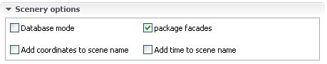
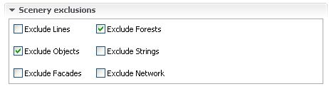

Scenery panel reference
The scenery panel is the main window of osm2xp.
It's composed of 4 sections:
- File and scene name
- Generated items
- Scenery options
- Scenery Exclusions
1.File and scene name
section

-Browse button : let you
choose an osm/pbf file , the choosen file will be displayed in the
text field right to the button.
-Scene name : the name of
the folder that will be created for your scene.
A generic name will be generated once you select a file, but you can
change the value of the text field to suit your needs.
-Generate all tiles checkbox
: if checked, osm2xp will list all tiles found in the file , then
process all of these tiles one after another.
-Coordinates : if
"generated all tiles" isn't checked, this box will be visible, to
let you choose wich tile you want to process.
2.Generated
items section

-Generate buildings : osm2xp
will generate buildings on the scene.
-Generate objects : osm2xp
will generate 3D objects based on the current objects rules.
-Generate forests : osm2xp
will generate forests based on the current forests rules.
-Generate street lights :
osm2xp will generate street lights along residential streets (big
fps hit, and may be removed soon because xplane10 already has this
feature built in)
3.Scenery
options section

-Database mode : if checked,
osm2xp will use an embedded database to store data during
generation. Try this option if you don't have enough memory to
process a tile (database mode is slower)
-Package facades : if
checked, osm2xp will copy the facades files of the current facade
set into the generated scene folder.
-Add coordinates to scene name :
if checked, the coordinates of the first processed tile will be
added to the scene name
-Add time to scene name : if
checked, the current time and date will be added to the scene name
4.Scenery
exclusions section

-Exclude lines : exclusion of
lines (taxiways lines...)
-Exclude network : exclusion of
network (roads...)
-Exclude forests : exclusion of
forests
-Exclude objects : exclusion of
3D objects (xplane defaut autogen, custom sceneries)
-Exclude facades : exclusion of
facades
-Exclude strings: exclusion of
strings (strings of objects)
You should always exclude objects , or else xplane defaut autogen
will also be displayed.
Forests should also be excluded if you're generating them with
osm2xp.